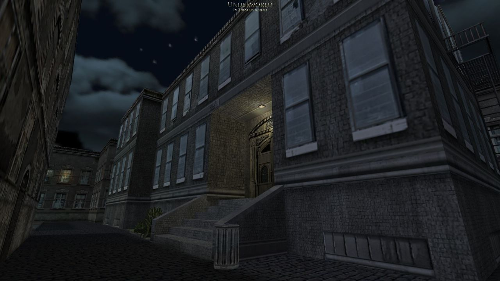
City for Underworld: Bloodline by Black Widow Games
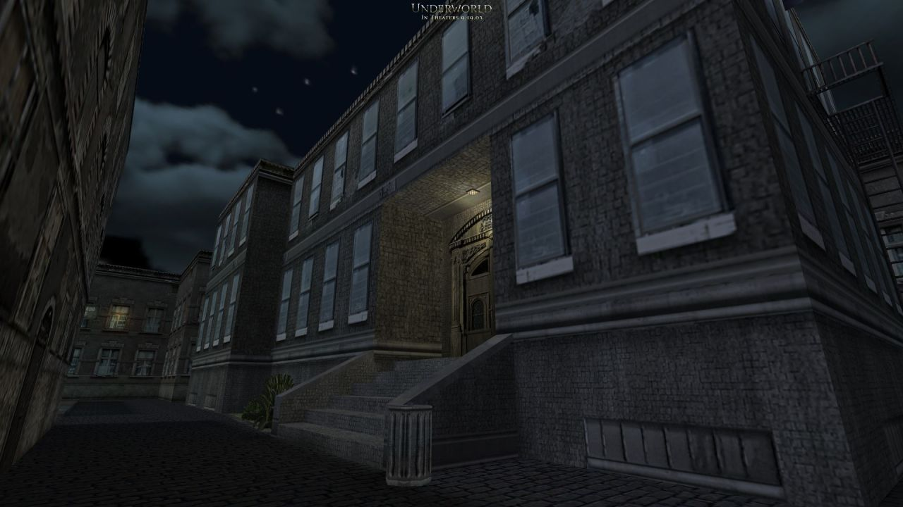
City for Underworld: Bloodline by Black Widow Games
“don’t make me go throw down or somethin”

ts_neobaroque for The Specialists by Andreas Braunagel

ns_eclipse for Natural Selection by Andrew Weldon

Pleasingpixels: De_mayariver, Counter-Strike 1.6
Bonus pleasingpixels this week: I’m experimenting with cinemagraph-styled pictures like the one in this post, which I’d publish every now and then. Tumblr limits the size of gifs and therefore the quality, so please don’t hesitate to give me feedback: Should I post more of them from time to time?

Toon Run for Sven Co-op by koelzk
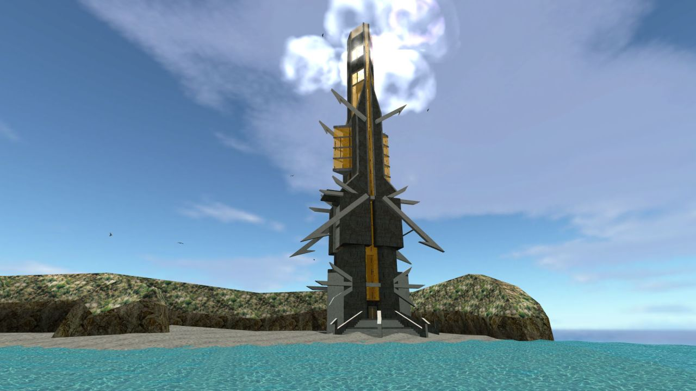
Somewhere in Time by zeeba-G

Casbah for Team Fortress Classic by Dave Johnston and Valve

Half-Life Tourney 1 for Half-Life deathmatch by Svante Ekholm

Half-Life: Echoes (upcoming) by MrGnang
http://www.moddb.com/mods/half-life-echoes

Afraid of Monsters: Director’s Cut by Andreas Rönnberg
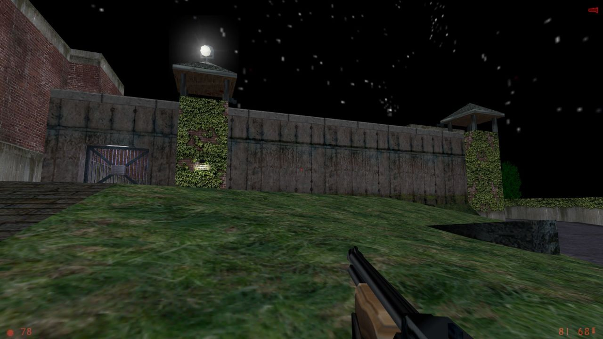
They Hunger 2: Rest in Pieces by Black Widow Games

ts_trident for The Specialists by Stinkey

O.U.T.C.A.S.T. (unreleased)

USS Darkstar by Black Widow Games
http://www.runthinkshootlive.com/posts/uss-darkstar/
I’ll be streaming this today for RunThinkShootLive’s Classic of the Month in an hour, 9am EDT / 1pm GMT. twitch.tv/planetphillip
The Core (upcoming) by James Archibald and Andy Morris
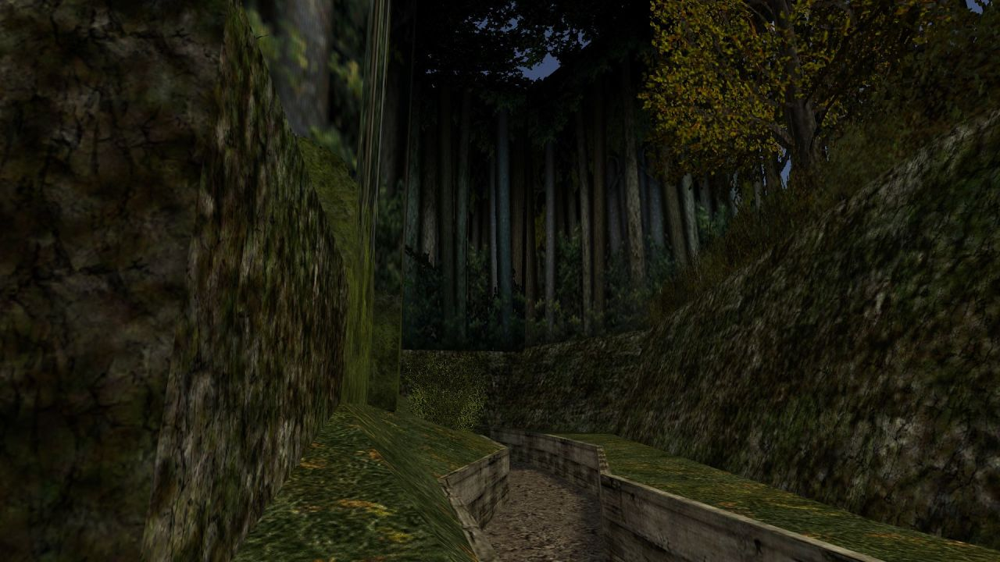
dod_forest for Day of Defeat by Brian Schurko


Arrangement (upcoming)

as_oilrig


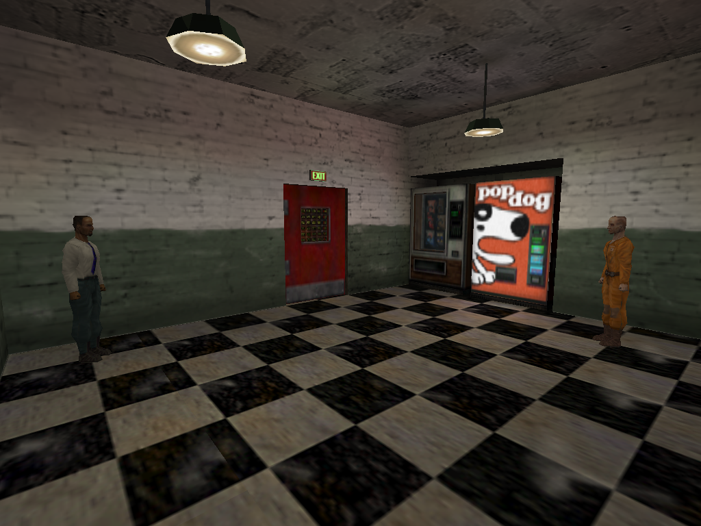

cs_backalley
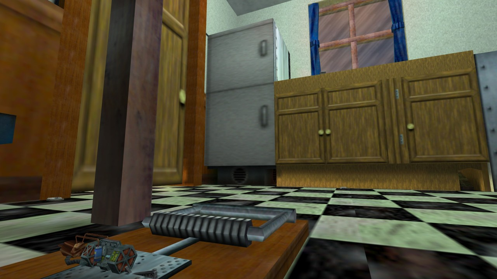
rats for Half-Life deathmatch by Chris Spain
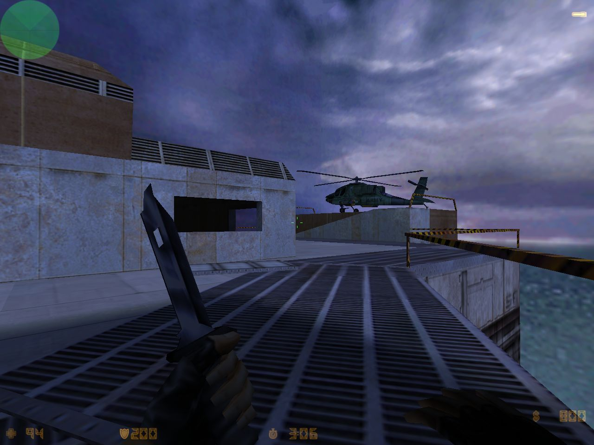
as_oilrig for Counter-Strike by Chris Ashton
Counter-Strike Beta 6.0, released 16 years ago - March 10, 2000
Assassination (as_) maps and Escape (es_) maps were brand new, and of course didn’t last too long in CS.
And look! The original oilrig escape chopper was an Apache!
That wraps up the look at Counter-Strike Beta 6.0 - thanks for watching!

cs_747 for Counter-Strike by Stephen Superville and Leon Nieuwoudt
Counter-Strike Beta 6.0, released 16 years ago - March 10, 2000

as_oilrig for Counter-Strike by Chris Ashton
Counter-Strike Beta 6.0, released 16 years ago - March 10, 2000

de_railroad for Counter-Strike by John Corwin and Kevin Anderson
Counter-Strike Beta 6.0, released 16 years ago - March 10, 2000
es_frantic for Counter-Strike by Chris Auty
Counter-Strike Beta 6.0, released 16 years ago - March 10, 2000

de_fang for Counter-Strike by Jo Bieg
Counter-Strike Beta 6.0, released 16 years ago - March 10, 2000

es_jail for Counter-Strike by Kurt Stassen
Counter-Strike Beta 6.0, released 16 years ago - March 10, 2000

as_riverside for Counter-Strike by Jukka Nolvi
Counter-Strike Beta 6.0, released 16 years ago - March 10, 2000
Assassination (as_) maps maps were brand new!

de_railroad for Counter-Strike by John Corwin and Kevin Anderson
Counter-Strike Beta 6.0, released 16 years ago - March 10, 2000

cs_747 for Counter-Strike by Stephen Superville and Leon Nieuwoudt
Counter-Strike Beta 6.0, released 16 years ago - March 10, 2000

es_frantic for Counter-Strike by Chris Auty
Counter-Strike Beta 6.0, released 16 years ago - March 10, 2000
Escape (es_) maps were brand new!

as_oilrig for Counter-Strike by Chris Ashton
Counter-Strike Beta 6.0, released 16 years ago - March 10, 2000
Assassination (as_) maps and Escape (es_) maps were brand new!
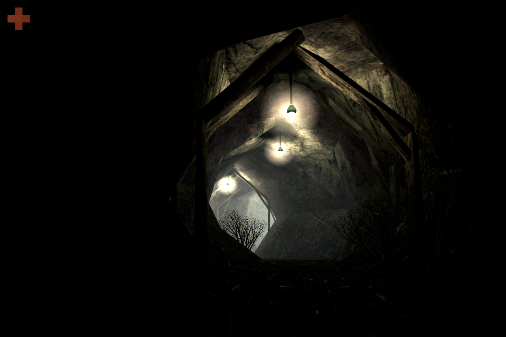
Pleasingpixels: De_jungletemple, Counter-Strike 1.6

de_fang for Counter-Strike by Jo Bieg
Counter-Strike Beta 6.0, released 16 years ago - March 10, 2000
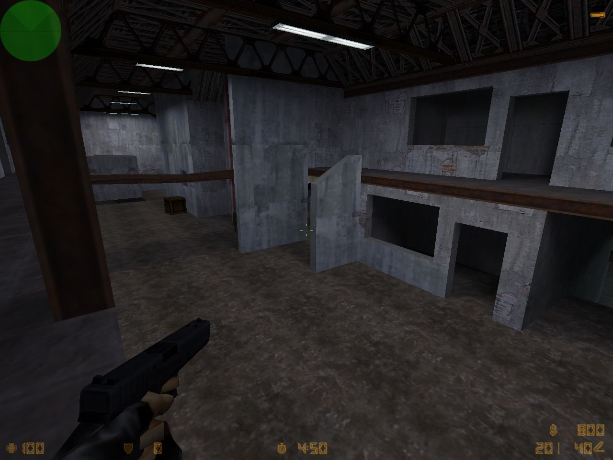
es_jail for Counter-Strike by Kurt Stassen
Counter-Strike Beta 6.0, released 16 years ago - March 10, 2000
Escape (es_) maps were brand new!

as_riverside for Counter-Strike by Jukka Nolvi
Counter-Strike Beta 6.0, released 16 years ago - March 10, 2000
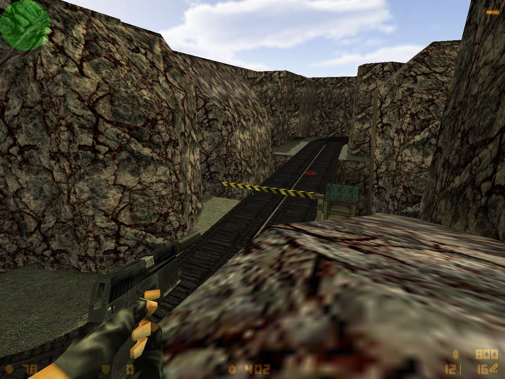
de_railroad for Counter-Strike by John Corwin and Kevin Anderson
Counter-Strike Beta 6.0, released 16 years ago - March 10, 2000

cs_747 for Counter-Strike by Stephen Superville and Leon Nieuwoudt
Counter-Strike Beta 6.0, released 16 years ago - March 10, 2000
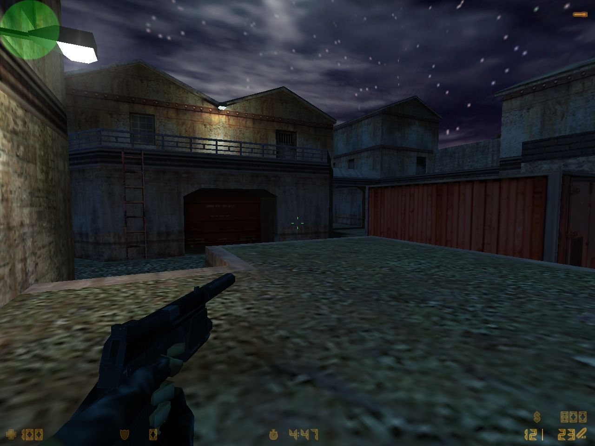
de_fang for Counter-Strike by Jo Bieg
Counter-Strike Beta 6.0, released 16 years ago - March 10, 2000
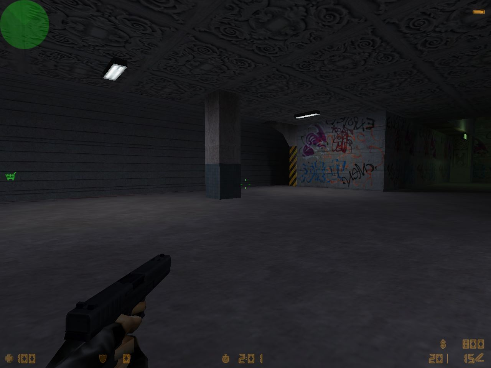
es_frantic for Counter-Strike by Chris Auty
Counter-Strike Beta 6.0, released 16 years ago - March 10, 2000
Escape (es_) maps were brand new!

as_oilrig for Counter-Strike by Chris Ashton
Counter-Strike Beta 6.0, released 16 years ago - March 10, 2000
Assassination (as_) maps were brand new, as were Escape (es_) maps!
Kicking off a few days showing off the CS Beta 6.0 maps, already 16 years old!
Persian Letters for Half-Life Deathmatch by Robert Yang
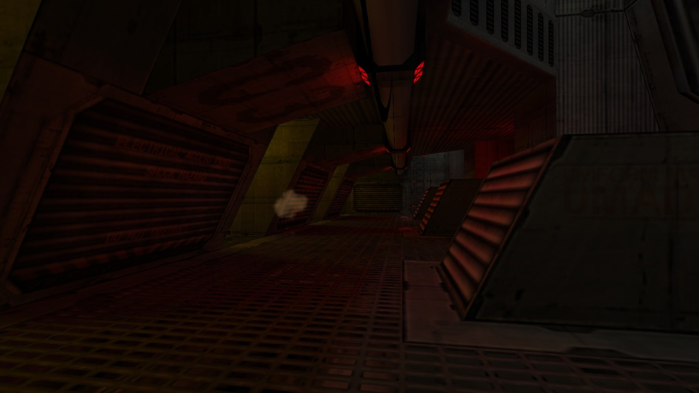
dm_enpro for Half-Life Deathmatch by Victor-933

ts_frigid for The Specialists by WillSchnevel

dm4 for Deathmatch Classic by Valve
Another quake-inspired map featured on @goldsourcegold, the inspiration for this blog :)
Aw, shucks. And thanks!
Great to have these ‘digital tourism’ blogs. Might have to add a Source one soon, that engine is reaching retro status at 12 years old.
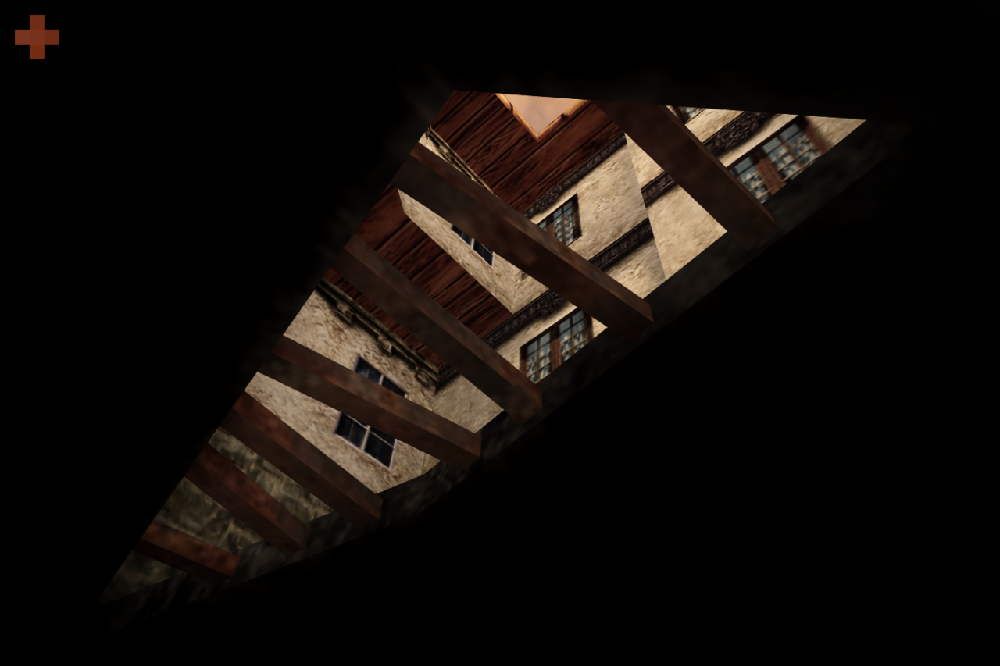
Pleasingpixels: De_torn, Counter-Strike: Condition Zero
This + last few reblogs are from a new(ish) tumblr account, @pleasingpixels! Looks like a nice variety of “ingame photography” - gives a nifty new look to familiar maps.
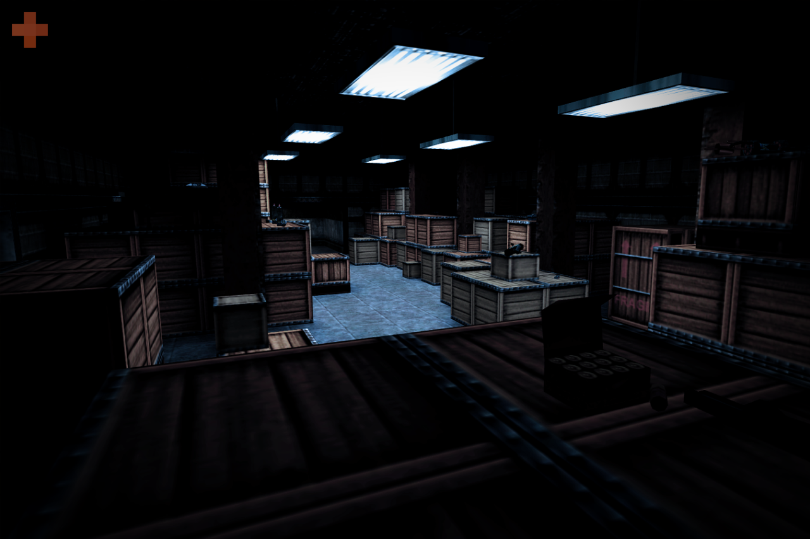
Pleasingpixels: Strikeyard, Half-Life Deathmatch